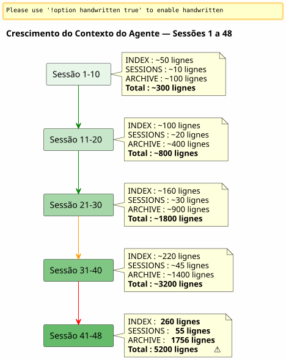

Janela Deslizante e Onda Fria: Quando o Contexto do Agente explode e é preciso arquivar sem perder
Publié le 26 April 2026
Resumo
Após 48 sessões em um único projeto e 150+ no total, o sistema de governança Eager/Lazy que eu tinha construído com cuidado começou a se sufocar. Os arquivos de agentes, que deveriam ser leves, pesavam 5200 linhas acumuladas. O contexto auto-carregado aumentava mais rápido do que minha capacidade de controlá-lo. Este artigo conta como eu conceptualizei um mecanismo de backup — entre sliding window e uma onda fria idêntica — para manter um contexto ativo leve sem jamais perder nada.
O Sinal : 5200 linhas
Estou no meio da sessão 048 sobre`magic-stick`, meu projeto de build de ISO Linux live. Opencode me observa. Como sempre, ele carregou automaticamente meus arquivos Eager no início da sessão —AGENT.adoc, PROMPT_REPRISE.adoc, .agents/INDEX.adoc. Nada de anormal.
Exceto que algo está errado. As respostas são mais lentas. O raciocínio está mais diluído. O agente esquece detalhes que tinha diante dos olhos há duas mensagens.
Abro um terminal e digito:
wc -l .agents/INDEX.adoc .agents/SESSIONS_HISTORY.adoc \
.agents/archives/COMPLETED_TASKS_ARCHIVE_2026-04.adoc260 linhas para INDEX. 55 para SESSIONS_HISTORY.1756 para COMPLETED_TASKS_ARCHIVE.
A pasta`sessions/`acrescenta mais ~3200 linhas. Total:5200 linhasde contexto que são carregados, de alguma forma, no cérebro temporário do agente.
A estratégia Eager/Lazy que eu tinha teorizado no artigo anterior funciona — mas ela tem um defeito de nascimento que eu não tinha antecipado : ela não temsem mecanismo de envelhecimento. Cada sessão adiciona uma linha a INDEX, um parágrafo a COMPLETED_TASKS, um ficheiro em sessions/. Nada sai nunca. O contexto é uma bola de neve que aumenta a cada nova sessão.

Não é um bug, é uma consequência direta do procedimento de fim de sessão que arquiva meticulosamente cada detalhe. O sistema é vítima do seu próprio sucesso.
O Diagnóstico : Tríplice Redundância
Peço ao agente que diagnostique o problema. Sua resposta é imediata e cirúrgica.
Arquivo |
Linhas |
papel |
Problema |
|
260+ |
EAGER (carregado automático) |
Tabela de todas as sessões desde a 001 —+1 linha por sessão |
|
55 |
EAGER |
Tabela resumida —redundância com INDEX |
|
1756 |
ansioso (implícito) |
Detalhes completos de todas as sessões de abril |
|
~5200 total |
LAZY (suposto) |
Arquivos individuais, masnão utilizadasparce que tudo já está em COMPLETED_TASKS |
O agente identifica quatro causas raízes :
-
COMPLETED_TASKS_ARCHIVE absorve tudo— Em vez de apontar para os arquivos`.sessions/`, ele copia integralmente cada sessão.
-
INDEX.adoc serve como histórico completo— A tabela "Sessões Recentes" contém 30+ entradas.
-
SESSIONS_HISTORY.adoc redundante— Mesma informação que INDEX, formato diferente.
-
A regra LAZY não é respeitada— COMPLETED_TASKS é implicitamente EAGER porque contém tudo.
Sua proposta é radical : limitar INDEX a 10 sessões, limpar COMPLETED_TASKS, mover SESSIONS_HISTORY para LAZY puro. Ganho imediato :~1900 linhas economizadas.
É limpo, eficiente e lógico. Mas tenho um problema com esta abordagem.
Por que eu rejeitei a solução óbvia
A solução do agente é a de um engenheiro que otimiza um cache. Limitar. Truncar. Remover as redundâncias.
Mas essas "redundâncias" não são. Cada arquivo de governança captura unângulo diferentena mesma realidade :
-
ÍNDICEvisão macro, dashboard executivo
-
SESSIONS_HISTORY= tabela cronológica linear, pontuada
-
COMPLETED_TASKS_ARCHIVE= narrativa detalhada com métricas
-
sessions/*.adoc = arquivos individuais, contexto completo
Não é duplicação boba. Éperspectiva múltipla estruturada. É exatamente isso que precisamos para destilar — para que mais tarde, um humano (ou um LLM futuro melhor treinado) possa cruzar os ângulos e extrair padrões.
Imagine um cientista de dados dizendo a você: « Vamos remover 3 das 6 colunas, elas estão correlacionadas. » O que você responde a ele? Que a correlação não é redundância quando cada coluna captura uma dimensão diferente do mesmo fenômeno. Que é precisamente essa riqueza dimensional que torna o conjunto de dados utilizável.
É a minha intuição. E eu a defendo contra a racionalidade fria do agente.
_ Não vejo uma caixa de tudo silenciosa na minha ideia. Não enfiamos tudo, deslocamos o resultado estruturado do procedimento de fim de sessão — cada arquivo com seu ângulo, suas redundâncias que na verdade são um enriquecimento. É esse material multidimensional que será melhor para a destilação. _
O agente leva o golpe. E se corrige.
A Proposição: Onda Fria Idêntica
O agente então propõe um mecanismo mais fino, que respeita minha intuição de conjunto de dados rico, ao mesmo tempo em que resolve o problema técnico do contexto que explode.
O princípio é simples e inspira-se diretamente do patternQuente/Morno/Frio Armazenamentoaplicado à gestão de arquivos:
-
Quente (EAGER)= as 10 últimas sessões em INDEX, PROMPT_REPRISE da sessão N+1, os 2 últimos arquivos de sessão
-
Quente (LAZY)= SESSIONS_HISTORY recente, SCRIPT_VERIFICATION, toda a documentação de referência
-
Frio (backup/)= tudo o mais, deslocadointacto, sem transformação, sem reindexação
----
----
.agents/
├── INDEX.adoc → Sessions N-9 à N (10 dernières)
├── SESSIONS_HISTORY.adoc → Sessions N-9 à N
├── SCRIPT_VERIFICATION.adoc → Dernière vérif (pas d'historique)
├── PROMPT_REPRISE.adoc → Session N+1 uniquement
├── sessions/ → Sessions N-1 à N uniquement
└── backup/
└── Y2026-sessions-001-039/ ← Vague froide, COPIE INTÉGRALE
├── INDEX.adoc → Sessions 001 à 039 (complet)
├── SESSIONS_HISTORY.adoc → Sessions 001 à 039 (complet)
├── COMPLETED_TASKS_ARCHIVE.adoc → Sessions 001 à 039 (complet)
└── sessions/ → 001.adoc, 002.adoc...
----
A chave do mecanismo :**O backup não é um índice central, é uma cópia fiel da onda passada.**. Quando ultrapassamos o horizonte das 10 sessões ativas, não excluímos nada. Não reindexamos nada. Não fundimos nada. Pegamos o pacote de arquivos de agentes tal como estava na sessão N-10 e o movemos para`backup/`.
Os arquivos ativos, eles, são truncados :
* INDEX : apenas as 10 últimas linhas (sliding window)
* SESSIONS_HISTORY : idem
* COMPLETED_TASKS_ARCHIVE : novo arquivo para o período atual
* sessions/ : apenas as 2 últimas sessões
[plantuml, format=svg, id=diag-hot-warm-cold, alt="Architecture Hot/Warm/Cold du contexte agent — EAGER/LAZY/backup"]
----
@startuml
skinparam backgroundColor #FEFEFE
skinparam defaultTextAlignment center
skinparam wrapWidth 200
title Arquitetura Quente / Morno / Fria do Contexto do Agente
package "HOT (EAGER)\nCarregado automaticamente\n~300 linhas" as HOT #FFCDD2 {
file "INDEX.adoc
(10 sessões)" as IDX_HOT
file "PROMPT_REPRISE
(sessão N+1)" as PRO_HOT
file "AGENT.adoc\n(regras absolutas)" as AG_HOT
}
package "WARM (LAZY)
Carregado sob demanda
~500 linhas" as WARM #FFF9C4 {
file "SESSIONS_HISTORY\n(10 últimas)" as HIS_WARM
file "SCRIPT_VERIFICATION
(última)" as VER_WARM
file "PROCEDURES.adoc
(modelos)" as PRO_WARM
file "*_REFERENCE.adoc\n(documento técnico)" as REF_WARM
}
package "COLD (backup/)
Nunca carregado
Leitura apenas humana" as COLD #BBDEFB {
folder "Y2026-001-039/" as WAVE {
file "ÍNDICE (completo)" as IDX_COLD
file "SESSIONS_HISTORY\n(completo)" as HIS_COLD
file "COMPLETED_TASKS\n(concluído)" as ARCH_COLD
folder "sessões/ (001-039)" as SESS_COLD
}
folder "Y2026-040-???\n(futuro)" as FUTURE
}
HOT --> WARM : "agente sobe
se necessário"
WARM --> COLD : "Nunca automático
O ser humano vai lá sozinho"
note bottom of COLD
Règle : COPIE INTÉGRALE
Pas de transformation
Pas de réindexation
Read-only après archivage
end note
@enduml
----
O ganho imediato é massivo: o contexto EAGER passa de**~5200 linhas a ~300 linhas**. Uma divisão por 17. Sem ter perdido uma única linha de dados históricos.
== Por que isso não é uma bolsa de tudo
O agente, em sua primeira iteração, temia que`backup/`Torne-se uma caixa-preta — uma pasta onde se jogam arquivos que nunca serão relidos. É um medo legítimo. Mas ela se baseia numa confusão.
Um saco de tudo é quando se lançam arquivos**sem estrutura, sem convenção, sem lógica de agrupamento**. Aqui, o backup é estruturado por período (Y2026-001-039), e cada pasta de backup contém**a mesma estrutura**que o arquivo`.agents/`ativo : INDEX, SESSIONS_HISTORY, COMPLETED_TASKS_ARCHIVE, sessions/.
Não é um saco de tudo. É um**instantâneo horodatado**. Se poderia até dizer que é um mecanismo de versionamento simplificado — à exceção de que ele não versiona os arquivos individualmente, mas o pacote completo da governança em um instante T.
Quando você quiser encontrar uma informação antiga, não precisa de um índice central. Você tem duas opções:
1. **grep` direcionado**(blank)`grep -r "zsh" backup/Y2026-001-039/`— e você encontra tudo o que menciona zsh no período, independentemente do ângulo (INDEX, SESSIONS_HISTORY, arquivo de sessão).
2. **Reintegração manual**: você copia temporariamente a pasta de backup no contexto ativo e pede ao agente para analisar este período específico.
O índice é implícito. Ele está na estrutura mesmo dos arquivos — cada um já sendo um índice a partir do seu próprio ângulo.
== A Metáfora das Estantes
Para tornar o mecanismo intuitivo, eu o concebi em três prateleiras:
* **Prateleira 1 (EAGER)**— o plano de trabalho. O que eu preciso *agora*. ÍNDICE recente, PROMPT_REPRISE, regras absolutas. Leve, imediato, crítico.
* **Prateleira 2 (LAZY)**— biblioteca de consulta. O que posso ir buscar a pedido. Referências técnicas, histórico recente, procedimentos. Mais volumoso, mas não carregado na memória.
* **Porão (backup/)**— os arquivos frios. Tudo o que passou mas que eu não quero descartar. O agente nunca entra lá. O humano desce lá quando quiser destilar.
O agente propôs inicialmente uma quarta prateleira — um`index-backup.adoc`que seria LAZY e conteria um sumário de todo o backup. Eu recusei. Seria uma redundância a mais em um sistema que já sofre de crescimento linear. A estrutura dos arquivos arquivados já é um índice.
== O sensor de dois gatilhos
A conceptualização era sólida, mas ainda havia um ponto cego:**Quando exatamente acionar a rotação ?**O artigo inicial o identificava como uma questão aberta. Dois dias depois, a resposta está codificada nos arquivos de governança de seis projetos: um sensor com dois gatilhos.
=== O Gatilho Automático — `N % 10 == 0
O primeiro gatilho é matemático. Quando o número da sessão é múltiplo de 10 — sessão 10, 20, 30, 40 — a rotação de backup é executada automaticamente dentro do procedimento de fim de sessão, logo após a etapa 6.
Por que 10? É o compromisso entre duas forças opostas: uma janela muito curta (5 sessões) perde o contexto necessário à continuidade; uma janela muito longa (20 sessões) não resolve o problema de inchaço do contexto. Dez sessões, em um ritmo de uma a duas sessões por dia, cobrem aproximadamente uma semana de trabalho — suficiente para que o agente lembre das decisões recentes, mas não suficiente para que o contexto exploda.
=== O Gatilho por Limiar — 500 Linhas EAGER
O segundo gatilho é dinâmico. Independentemente do número da sessão, se os arquivos EAGER acumulados ultrapassarem**500 linhas**, a rotação se dispara.
Este limiar protege contra o cenário em que as sessões são excepcionalmente produtivas — muito conteúdo escrito em poucas sessões. Uma sessão que produz 120 linhas de conteúdo editorial faz aumentar COMPLETED_TASKS_ARCHIVE muito mais rápido do que uma sessão de depuração que corrige duas linhas. O limiar de 500 linhas, medido via`wc -l .agents/INDEX.adoc .agents/archives/COMPLETED_TASKS_ARCHIVE_*.adoc PROMPT_REPRISE.adoc`, captura essa assimetria.
=== O Gatilho Manual — "rotação de backup
Finalmente, o ser humano permanece no controle. As palavras-chave`rotation backup`, `backup rotation` ou `lance la rotation backup`Disparam o procedimento mediante solicitação, independentemente do fim da sessão. Útil quando se sente que o contexto está ficando pesado, mas ainda não se está em um múltiplo de 10, ou quando se quer arquivar uma fase de trabalho antes de iniciar uma nova.
[plantuml, format=svg, id=diag-capteur-trigger, alt="Les trois déclencheurs du capteur de rotation backup — automatique, seuil, manuel"]
----
@startuml
skinparam backgroundColor #FEFEFE
skinparam defaultTextAlignment center
skinparam wrapWidth 200
title Sensor de Rotação de Backup — Os Três Gatilhos
start
:Procédure de fin de session;
note right: Mots-clés "fim da sessão"\nou "paramos aqui"
:Étapes 1 à 6\n(archivage standard);
note right
1. Archive sessions/N.adoc
2. MAJ PROMPT_REPRISE
3. MAJ SESSIONS_HISTORY
4. MAJ INDEX.adoc
5. MAJ TEST_COVERAGE
6. MAJ COMPLETED_TASKS
end note
if (N % 10 == 0\nOU\nEAGER cumulé > 500 lignes ?) then (oui)
:⚙️ Rotation Backup\n(étape 7);
note right
1. Créer backup/Y20XX-sessions-X-Y/
2. Copier intégrale INDEX + HISTORY
+ COMPLETED_TASKS + sessions/
3. Tronquer actifs à 10 sessions
4. Ajouter _Localisation active_
end note
else (non)
:Pas de rotation;
endif
:Checklist [✅] x 7\n(si applicable);
stop
@enduml
----
Este diagrama mostra a inserção exata do sensor no procedimento de fim da sessão. A etapa 7 é opcional — ela só será executada se uma das duas condições for verdadeira — mas é sistematicamente *verificada*. A lista de verificação final inclui`[✅] 7. Backup roté (si applicable)`.
=== O Laço Fechado
Este sensor fecha o laço aberto pelo artigo anterior. A governança Eager/Lazy havia resolvido o problema da memória do agente entre duas sessões. O mecanismo Hot/Warm/Cold resolveu o problema da memória que cresce. O sensor com dois gatilhos resolve o problema do *quand* — removendo ao ser humano a carga mental de monitorar o tamanho do contexto.
[plantuml, format=svg, id=diag-boucle-fermee, alt="Les trois couches de la gouvernance agent — Eager/Lazy, Hot/Warm/Cold, Capteur"]
----
@startuml
skinparam backgroundColor #FEFEFE
skinparam defaultTextAlignment center
title Os Três Camadas da Governança Agente
left to right direction
package "Camada 1 — Memória
(Artigo 0108)" as C1 #E8F5E9 {
rectangle "**EAGER**
Painel de controle
Carregado automaticamente" as EAG
rectangle "**LAZY**
Manual proprietário
Carregado sob demanda" as LAZ
EAG -[hidden]right-> LAZ
}
package "Camada 2 — Envelhecimento
(Artigo 0110)" as C2 #FFF9C4 {
rectangle "**HOT**
10 sessões ativas
~300 linhas" as HOT
rectangle "**WARM**
Referências
Procedimentos" as WRM
rectangle "**COLD**
backup/
Onda de frio" as CLD
HOT -[hidden]right-> WRM
WRM -[hidden]right-> CLD
}
package "Camada 3 — Gatilho
(Hoje)" as C3 #BBDEFB {
rectangle "**Auto**
N % 10 == 0" as AUTO
rectangle "**Limiar**\n> 500 linhas" as SEUIL
rectangle "**Manuel**
rotação de backup" as MAN
AUTO -[hidden]right-> SEUIL
SEUIL -[hidden]right-> MAN
}
C1 --> C2 : "A memória cresce\n→ é necessário um mecanismo\nde envelhecimento"
C2 --> C3 : "O envelhecimento
→ é preciso um desencadeador
para executá-lo"
note bottom of C3
✅ Déployé sur 6 projets
magic-stick · bakery-gradle
plantuml-gradle · cheroliv.com
jhipster-gradle-plugins
quizz-benchmark-gradle
end note
@enduml
----
As três camadas se empilham logicamente. A primeira dá uma memória ao agente. A segunda impede que essa memória sufogue o agente. A terceira automatiza a manutenção dessa memória para que o humano não tenha que pensar nisso.
=== A Migração Efetiva no cheroliv.com
O mecanismo não permaneceu teórico. Sobre`cheroliv.com`, a primeira rotação de backup foi executada em 29 de abril de 2026 — as sessões de -6 a 2 migraram para`.agents/backup/Y2026-sessions-neg6-a-002/` :
|===
|Arquivo |Antes da rotação |Após rotação |ganho |`.agents/INDEX.adoc` |19 sessões listadas |10 sessões (3-12) |-9 entradas |`.agents/SESSIONS_HISTORY.adoc` |18 sessões |10 sessões |-8 entradas |`COMPLETED_TASKS_ARCHIVE` |161 linhas (sessões 1-12) |135 linhas (sessões 3-12) |-26 linhas |`sessions/` |20 arquivos |10 ficheiros |-10 arquivos |**cópia de segurança/** |Inexistente |1 onda fria (10 sessões arquivadas) |+1 pacote frio
|===
O ganho em linhas foi modesto — o projeto é jovem, 12 sessões — mas o importante é que o**mecanismo está em posição**. A próxima rotação automática será acionada na sessão 20, ou mais cedo se as 500 linhas EAGER forem atingidas.
== A Lição Humano-Agente
Esta sessão 048 me ensinou algo fundamental sobre a colaboração com um agente de IA.
O agente tem um viés natural : ele tenta**otimizar**, à **simplificar**, à **eliminar as redundâncias**. Este é o viés de um sistema treinado para produzir respostas limpas e concisas. Diante de um conjunto de dados rico e multidimensional, o primeiro reflexo dele é reduzi-lo à sua forma mais simples.
O ser humano, ele, tem uma intuição diferente: ele sente que a redundância estruturada é um**trunfo**, não é um defeito. Que a diversidade dos ângulos sobre uma mesma realidade é precisamente o que permitirá, mais tarde, uma destilação de qualidade.
Não é que o agente está errado. É que o seu 'óptimo' não é o meu. O agente otimiza para o**presente**— o contexto imediato, a resposta rápida à pergunta feita. O ser humano otimiza para o**futuro**— a capacidade de encontrar, cruzar, destilar em três meses ou três anos.
____ O que eu quero é o material bruto. Suas reflexões, suas hesitações, suas respostas às minhas perguntas. Não a sua síntese. A síntese, eu sei fazer melhor que você. Eu quero a matéria‑prima. ____
Esta frase que eu lhe disse no final da sessão resume tudo. O agente é uma ferramenta de produção. O humano é a ferramenta de destilação. A governança não foi feita para que o agente entenda tudo sozinho — foi feita para que o humano possa, mais tarde, trabalhar o material produzido.
A onda fria idêntica é a tradução arquitetônica desta filosofia: não se joga nada, não se funde nada, não se reindexa nada. Move-se o pacote intacto. A destilação virá mais tarde, à mão, pelo humano.
== Suquência Lógica do Artigo Anterior
Se você leulink:/blog/2026/0108_gouvernance_agent_opencode_eager_lazy_post.html[o artigo sobre a estratégia Eager/Lazy], você reconhecerá a progressão natural:
1. **Artigo 0108**— A governança Eager/Lazy : *comment* estruturar o contexto do agente em dois níveis de disponibilidade
2. **Este artigo 0110**— O mecanismo de backup: *comment* como envelhecer este contexto sem perdê-lo quando ficar muito grande
O primeiro artigo respondia à pergunta: « O agente não se lembra de nada entre duas sessões, como lhe dar uma memória?
Ele responde à pergunta que decorre inevitavelmente da primeira: « A memória aumenta a cada sessão, como impedir que ela suffoque o agente sem apagá‑la ?
A resposta está em um padrão:**Quente/Morno/Frio**, aplicado aos arquivos de governança. E em um princípio :**nunca perder nada, sempre realocar tudo**.
== Links
* Artigo anterior:link:/blog/2026/0108_gouvernance_agent_opencode_eager_lazy_post.html[Governar um agente IA com AsciiDoc]
* Meu site : https://cheroliv.com
* O projeto`magic-stick`: https://github.com/cheroliv/magic-stick
---
*Um bom sistema de governança nunca apaga dados. Ele os organiza.*
----